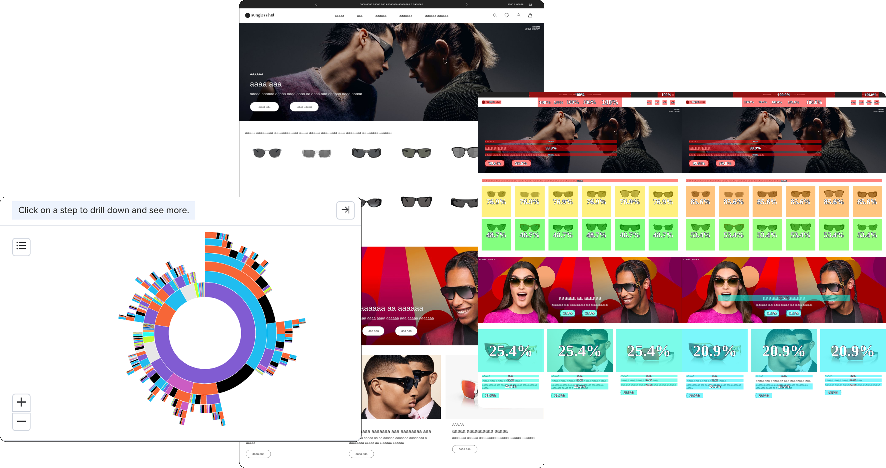
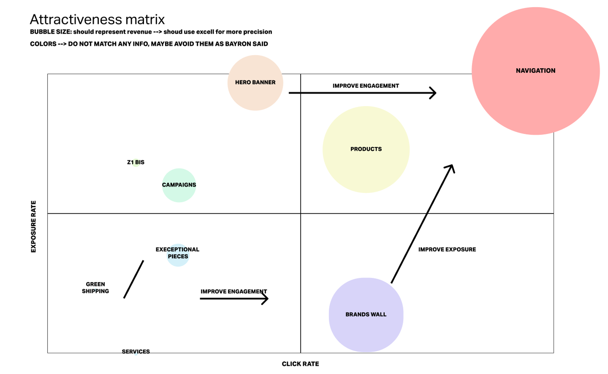

Bounce ≠ low engagement
Bouncing users could spend longer and scroll more while interacting less.
ARCHIVE 02 · Sunglass Hut · 2022
Using behavioural data to understand why homepage engagement was not translating into forward movement.
Homepage performance raised an uncomfortable question: users who spent more time and scrolled more were not necessarily having a better experience. The analysis compared bouncing and non-bouncing behaviour to understand where the homepage was failing to help people move forward.
Bouncing users could spend longer and scroll more while interacting less.
Non-bouncing users interacted more with navigation and search.
Make search more visible, strengthen category entry points and reconsider homepage content order / exposure.



More time on page is not automatically better. Behavioural data became useful when it helped distinguish productive engagement from users simply being stuck.